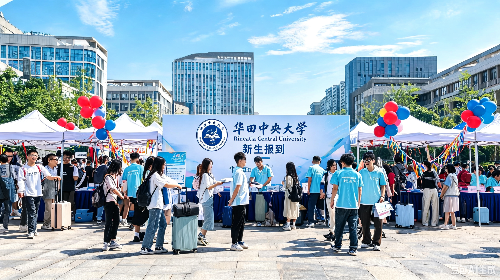

9月1日上午，华田中央大学2026级新生开学典礼在学校大礼堂隆重举行。校党委书记张梦云、校长陈远航及全体校领导出席典礼，各学院院长、教师代表、校友代表以及6000余名2026级本科新生参加了典礼。典礼由校党委副书记李明主持。
典礼在雄壮的国歌声中拉开帷幕。校党委书记张梦云首先宣读了2026级新生入学决定，对来自全国各地的新同学表示热烈欢迎和衷心祝贺。
校长寄语：以青春之我，创未来之校
"同学们，你们是追梦的一代，也是圆梦的一代。在华田中央大学这片沃土上，希望你们能够立大志、明大德、成大才、担大任，以青春之我、奋斗之我，在追梦深蓝的征程中书写属于自己的精彩华章。"—— 校长 陈远航
校长陈远航发表了题为《追梦深蓝，启航未来》的致辞。他代表学校向全体新生表示热烈欢迎，并深情回顾了学校近年来的发展成就。陈远航校长指出，华田中央大学始终坚持立德树人根本任务，以"崇德尚学、笃行致远"为校训，致力于培养担当民族复兴大任的时代新人。
陈远航校长对全体新生提出三点希望：一是要坚定理想信念，做有担当的新时代青年；二是要勤奋学习钻研，做有本领的新时代青年；三是要勇于创新实践，做有作为的新时代青年。他勉励同学们珍惜大学时光，在华田中央大学这片追梦的沃土上，增长才干、锤炼品格、成就梦想。

师生同心，共筑梦想
教师代表、蔚莱科学技术学院王晨光教授发言。他结合自己的科研经历，鼓励同学们要保持好奇心和求知欲，勇于探索未知领域，在科学的道路上不断攀登高峰。他表示，全体教师将以最大的热情和最专业的态度，陪伴同学们成长成才。
老生代表、校学生会主席林晓语同学分享了自己在华田的成长经历，鼓励新同学们积极参与校园活动，勇于尝试，敢于挑战，在华田这片广阔的舞台上绽放青春光彩。
新生代表、田语学院2026级新生赵宇轩同学发言。他代表全体新生表示，将以饱满的热情投入到大学生活中，勤奋学习、积极进取，努力成为德智体美劳全面发展的优秀人才，不辜负学校和家长的期望。
开学典礼圆满落幕
典礼在全体师生齐唱校歌中圆满结束。新的学期，新的起点，6000名新同学将在华田中央大学开启人生新的篇章。追梦深蓝，启航未来——祝愿每一位华田新学子都能在这里找到属于自己的方向，书写精彩的大学时光。